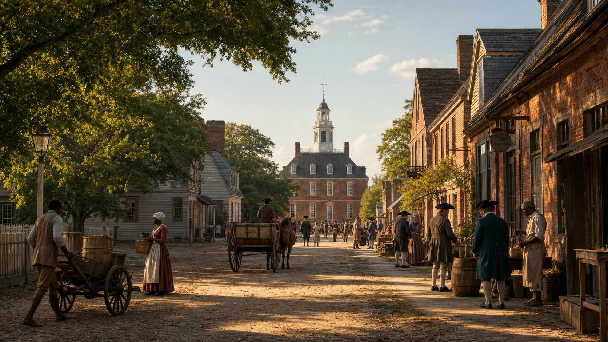

← Back homeEDTFour centuries in one corner of Virginia
The Historic Triangle
Jamestown begins the English colonial story in 1607. Williamsburg becomes its political center. Yorktown becomes the battlefield where American independence is effectively secured.

Artist’s reconstruction · Williamsburg around the eve of Revolution
01 · Williamsburg
A capital becomes a crucible.
Williamsburg grew from Middle Plantation, a settlement on high ground between the James and York rivers. For most of the eighteenth century it was Virginia’s political, cultural, and educational center—and a place where arguments over rights, power, slavery, and independence played out in public.
Middle Plantation
English settlers establish a fortified inland community between the two rivers.
William & Mary is chartered
The college becomes the second-oldest institution of higher education in British North America.
Virginia’s new capital
After the Jamestown statehouse burns, the capital moves to Middle Plantation, renamed Williamsburg for King William III.
Politics moves to the tavern
After the royal governor dissolves the House of Burgesses, former members meet at the Raleigh Tavern and continue organizing resistance.
The Gunpowder Incident
Royal Governor Lord Dunmore orders gunpowder removed from the Magazine, accelerating the collapse of royal authority in Virginia.
The capital moves again
Virginia transfers its capital to Richmond, farther inland and less exposed to British attack.
Restoration begins
W. A. R. Goodwin and John D. Rockefeller Jr. begin the ambitious project that becomes Colonial Williamsburg.
Artist’s reconstruction · The early fort on the James River
02 · Jamestown
A precarious foothold.
Jamestown was founded inside Tsenacommacah, the homeland of the Powhatan peoples. Its survival depended on Indigenous knowledge and trade even as English expansion brought conflict, dispossession, disease, and profound upheaval.
The English arrive
About 100 colonists establish James Fort, the first permanent English settlement in North America.
John Smith takes command
Smith imposes stricter discipline and relies on trade—sometimes coercive—with nearby Powhatan communities.
The Starving Time
War, drought, disease, and lack of food devastate the colony; only a fraction of the settlers survive the winter.
Pocahontas and John Rolfe marry
Their marriage accompanies several years of reduced conflict between the English and the Powhatan paramount chiefdom.
Government—and forced labor—take new forms
Virginia’s first representative assembly meets. That same year, captive Africans are brought to Point Comfort, marking a critical development in the colony’s system of racialized servitude and slavery.
War reshapes the colony
A coordinated Powhatan offensive and the English retaliation that follows deepen a long and destructive conflict.
The capital leaves
After another statehouse fire, Virginia’s government relocates to Williamsburg.
Artist’s reconstruction · The allied siege of Yorktown, 1781
03 · Yorktown
The campaign that changed the war.
Yorktown was not the last fighting of the American Revolution, but the surrender of a major British army made continued war politically untenable. The victory depended on close cooperation among American ground forces, the French army, and the French navy.
Cornwallis fortifies Yorktown
The British commander establishes a base on the York River while allied leaders converge on Virginia.
The French control the Chesapeake
Admiral de Grasse’s fleet turns back the Royal Navy in the Battle of the Virginia Capes, isolating Cornwallis by sea.
The siege begins
Washington and Rochambeau lead the allied army from Williamsburg to encircle the British works.
The first parallel
Allied troops begin digging the first major siege trench under cover of darkness.
Redoubts 9 and 10 fall
French and American assault parties capture two key British positions, allowing the second siege line to advance.
A drummer signals a parley
With the allied bombardment overwhelming his defenses, Cornwallis asks to discuss surrender terms.
The British army surrenders
More than 7,000 British and German troops lay down their arms, effectively securing American independence.
Artist’s impressions · Not intended as documentary likenesses
04 · People to Know
Names behind the turning points.
c. 1596–1617
Pocahontas
Daughter of Powhatan, the paramount chief, she became an intermediary between Powhatan communities and the Jamestown colonists. The popular rescue story remains debated, and her later captivity and journey to England were far more complicated than the familiar legend.
1580–1631
John Smith
Soldier, explorer, and Jamestown leader whose writings shaped much of the settlement’s early story. His leadership was forceful, pragmatic, and frequently confrontational toward the Powhatan peoples.
1732–1799
George Washington
As commander of the Continental Army, Washington brought American forces south to Yorktown and coordinated the allied campaign with French General Rochambeau.
1743–1826
Thomas Jefferson
William & Mary student, Virginia legislator, governor, and author of the Declaration of Independence. His language of liberty existed alongside his lifelong enslavement of hundreds of people.
1736–1799
Patrick Henry
Orator and revolutionary leader who argued major cases in Williamsburg and challenged royal authority. His “Give me liberty” speech was delivered in Richmond in 1775.
1721–1786
James Armistead Lafayette
An enslaved Virginian who served as a spy for the Continental cause during the Yorktown campaign. His intelligence on British forces aided the allied victory; he later secured his freedom.